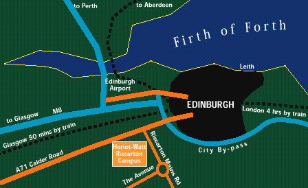
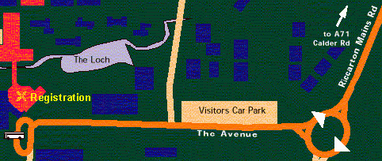
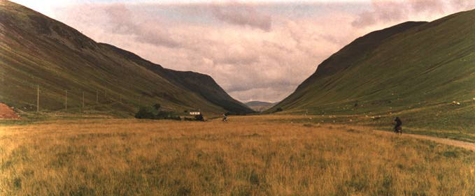

The
Conference Centre
INTERACT '99 will be hosted in the James Watt Centre of
the Edinburgh Conference
Centre in Riccarton, Edinburgh. Opened in 1990, the James
Watt Centre is one of Edinburgh's largest purpose built
conference venues. This self-contained facility houses a main
auditorium, adjacent seminar rooms and social / exhibition space.
The Conference Centre is located on Heriot-Watt University's Riccarton Campus to the West of Edinburgh City Centre. Local travel information is available on Heriot-Watt's Visitor Pages

Getting
to Edinburgh
The following are the main companies which fly to Edinburgh
Airport on a regular basis:
The main hubs with good connections to Edinburgh are Amsterdam (used by KLM/Northwest as a hub), London Heathrow (British Airways and Virgin) and Brussels (Sabena). Alternatively you can travel to Glasgow (some more flights including some direct links to US) or Manchester (further but more flights) and travel on by rail or hired car. There is great competition on European air routes, particularly for Edinburgh/London, it is worth shopping around. Rail fares are not always cheaper than flights.
For rail information see RailTrack's on-line timetable and for booking see The Train Line (Note: rail services in the UK are provided by many separate companies; the main companies in Scotland are ScotRail, Virgin and GNER; RailTrack maintain tracks and overall timetables but do not run trains; the Rail Line and on-line timetables claim to be operator independent).
Traffic reports and car route planning are available from the RAC.
HCI
in Scotland
There are several groups in Scotland working in the areas
covered by INTERACT '99, these include:
Other
events in the around INTERACT '99
The following conferences and Festival events are being
held in Edinburgh around the time of INTERACT '99:
About
Edinburgh and Scotland
Edinburgh (pronounced Edinbura) is the capital of Scotland
and is a major European financial centre. During the period
around the conference, Edinburgh will host the Edinburgh
International Festival - the largest arts festival in the world.
This year Edinburgh became home to Scotland's first parliament
since 1707 (when the act of Union was signed linking the Scottish
and English parliaments).
Scotland is one of the four countries making up the United Kingdom which is one of the 15 members of the European Union. She has a strong Celtic heritage with two languages unique to the country (Scottish Gaelic and Lallans). With some stunningly beautiful mountainous regions one of the major industries is tourism, although Scotland also has very strong academic, financial and electronic sectors - not to mention whisky production.
At the time of the conference the average temperature high in Edinburgh is around 17°C and an average low of around 9°C, with an average of 65mm rainfall per month. Current forecasts are available from The BBC (UK based), Online Weather (UK based), CNN (US based) and Yahoo (US based).
The currency in the UK is pounds sterling (£/GBP). Although the currency is the same as England, Scottish banks have the right to produce their own notes in addition the UK standard Bank of England notes - so there are four versions of each note (Royal Bank of Scotland, Bank of Scotland, Clydesdale Bank and Bank of England). Currency conversion and conversion tables for printing (cheat sheets) are available from Oanda. (Note: Euros are not legal currency in the UK and sterling fluctuates against the Euro).
EU and US citizens require a valid passport but no visa for a UK visit (however, we recommend checking with your travel agent at booking time). Official information for all countries is held at The Foreign & Commonwealth Office.

Two HCI researchers head for the hills